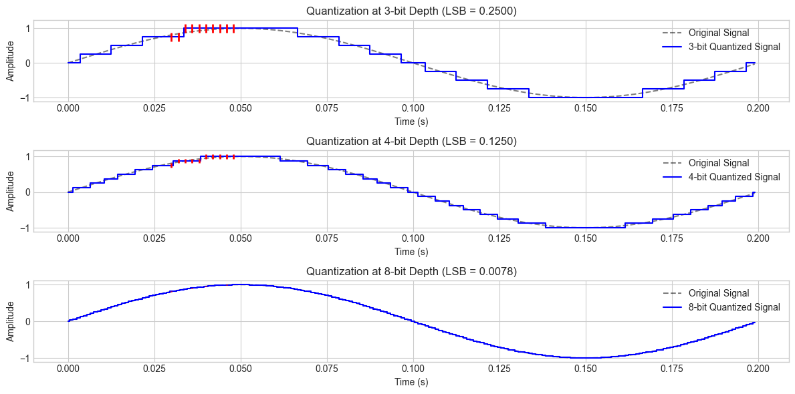
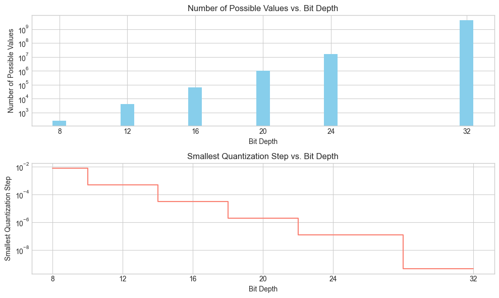
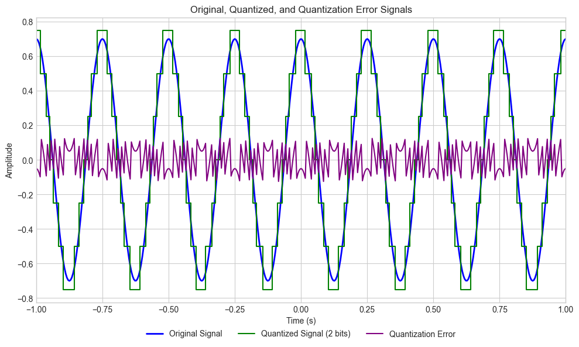
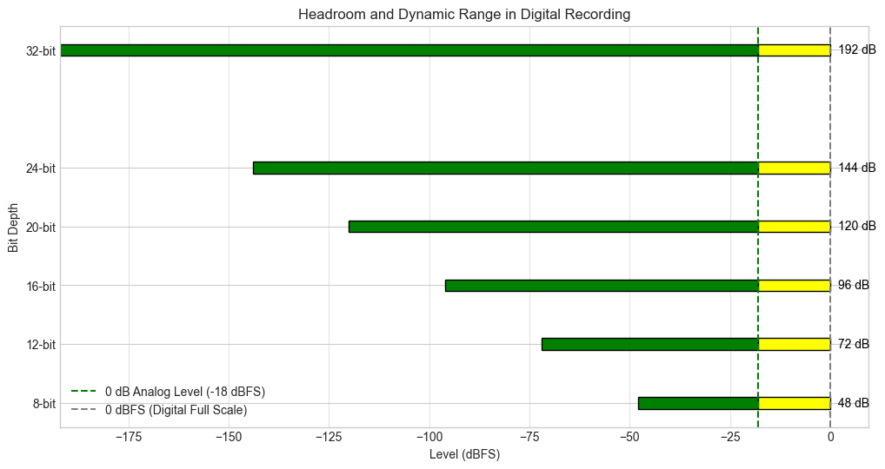
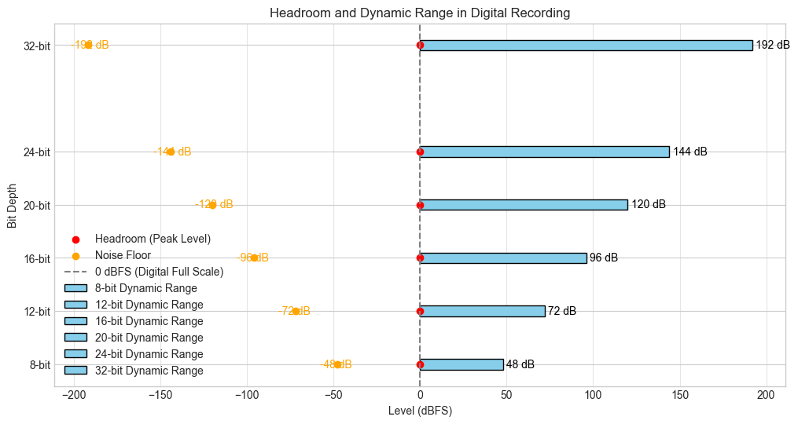
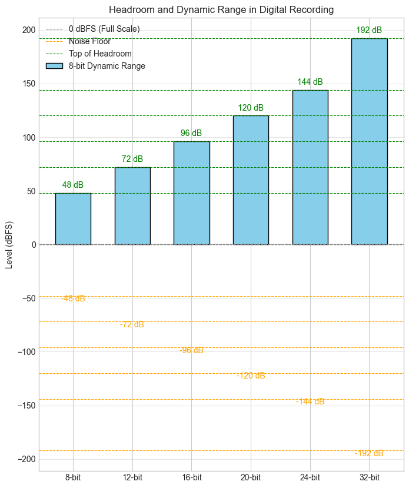
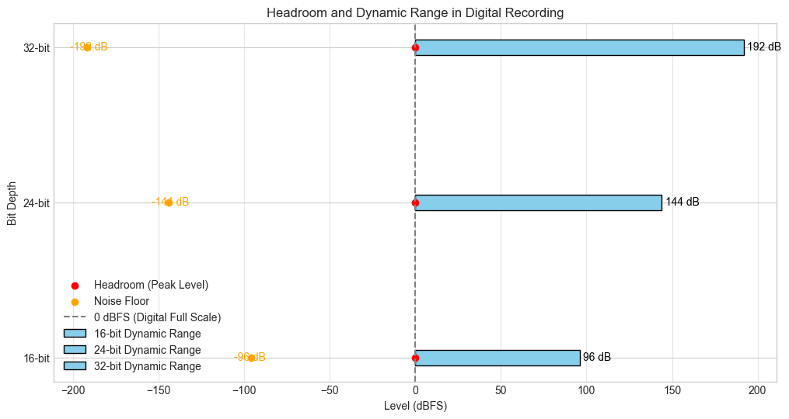
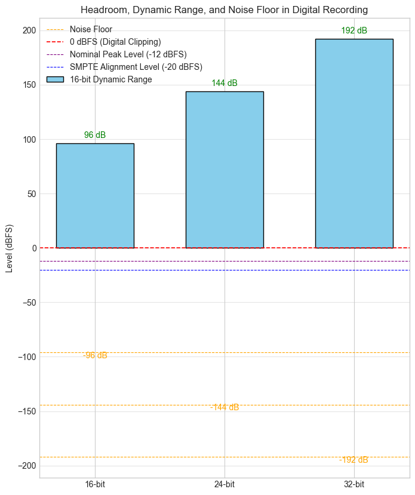
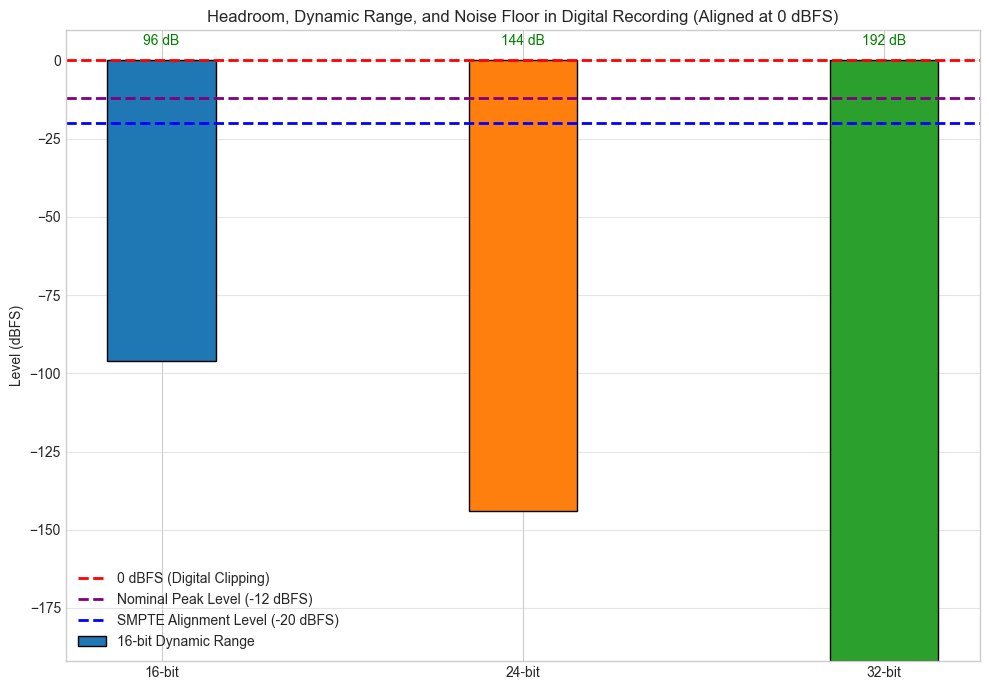

Quantization#
import numpy as np
import matplotlib.pyplot as plt
import matplotlib.patches as patches
plt.style.use('seaborn-v0_8-whitegrid')
plt.rcParams['axes.grid'] = True
import numpy as np
import matplotlib.pyplot as plt
# Generate a sine wave
fs = 1000 # Sampling frequency in Hz
t = np.linspace(0, 1, fs, endpoint=False) # 1 second of audio
freq = 5 # Hz
x = np.sin(2 * np.pi * freq * t) # Original continuous signal
# Function to quantize signal
def quantize(signal, bit_depth):
levels = 2 ** bit_depth
quantized_signal = np.round((signal + 1) * (levels / 2)) / (levels / 2) - 1
return quantized_signal
# Define bit depths to compare
bit_depths = [3, 4, 8] # Few bits to highlight LSB effect
plt.figure(figsize=(12, 6))
for i, bits in enumerate(bit_depths, 1):
quantized_x = quantize(x, bits)
lsb_value = 2 / (2 ** bits) # LSB value
plt.subplot(len(bit_depths), 1, i)
plt.plot(t[:200], x[:200], 'k', linestyle='dashed', alpha=0.5, label="Original Signal")
plt.step(t[:200], quantized_x[:200], 'b', label=f"{bits}-bit Quantized Signal", where='mid')
# Highlight LSB step
for j in range(30, 50, 2): # Select some steps to highlight
plt.vlines(t[j], quantized_x[j] - lsb_value / 2, quantized_x[j] + lsb_value / 2, color="red", linewidth=2)
plt.xlabel("Time (s)")
plt.ylabel("Amplitude")
plt.title(f"Quantization at {bits}-bit Depth (LSB = {lsb_value:.4f})")
plt.legend()
plt.tight_layout()
plt.show()

Bit Depth |
Number of Possible Values |
Smallest Quantization Step |
|---|---|---|
8-bit |
256 |
1/127 |
12-bit |
4,096 |
1/2047 |
16-bit |
65,536 |
1/32767 |
20-bit |
1,048,576 |
1/524287 |
24-bit |
16,777,216 |
1/8388607 |
32-bit |
4,294,967,296 |
1/2147483647 |
# Data
bit_depths = [8, 12, 16, 20, 24, 32]
num_possible_values = [256, 4096, 65536, 1048576, 16777216, 4294967296]
smallest_quantization_step = [1/127, 1/2047, 1/32767, 1/524287, 1/8388607, 1/2147483647]
# Plotting quantization levels
plt.figure(figsize=(10, 6))
# Bar plot for the number of possible values
plt.subplot(2, 1, 1)
plt.bar(bit_depths, num_possible_values, color='skyblue')
plt.yscale('log') # Use a logarithmic scale for better visualization
plt.xlabel('Bit Depth')
plt.ylabel('Number of Possible Values')
plt.title('Number of Possible Values vs. Bit Depth')
plt.xticks(bit_depths)
# Step plot for the smallest quantization step
plt.subplot(2, 1, 2)
plt.step(bit_depths, smallest_quantization_step, where='mid', color='salmon')
plt.yscale('log') # Use a logarithmic scale for better visualization
plt.xlabel('Bit Depth')
plt.ylabel('Smallest Quantization Step')
plt.title('Smallest Quantization Step vs. Bit Depth')
plt.xticks(bit_depths)
plt.tight_layout()
plt.show()

Dynamic Range#
Dynamic range is the ratio between the loudest possible and quietest distinguishable signal level in a system. In digital audio, it is determined by the bit depth of the signal.
Mathematically, the dynamic range (DR) in dB is given by:
\text{Dynamic Range} = 20 \log_{10}(2^b)
where:
\(b\) is the bit depth (e.g., 16-bit, 24-bit, etc.),
\(2^b\) represents the number of quantization levels.
Approximation to 6 dB per Bit#
Using logarithm properties, we can approximate:
20 \log_{10}(2^b) = 20 b \log_{10}(2)
Since:
\log_{10}(2) \approx 0.301
we get:
20 \times 0.301 \times b \approx 6.02 b
Thus, for practical purposes:
\text{Dynamic Range} \approx 6 b \text{ dB}
Applying this formula:
Bit Depth |
Dynamic Range (dB) |
|---|---|
8-bit |
48 dB |
12-bit |
72 dB |
16-bit |
96 dB |
20-bit |
120 dB |
24-bit |
144 dB |
32-bit |
192 dB |
# Sampling parameters
fs = 48000 # Sampling rate
pt = 480 # Number of points in time domain
T = 1 / fs # Sampling period
# Define a time vector for the discrete samples
t = np.linspace(-1.1, 1.1, pt)
# Define a signal with amplitude, frequency, phase
A = 0.7 # Amplitude
f0 = 4 # Frequency
phi = 0 # Phase
x_f0 = A * np.cos(2 * np.pi * f0 * t + phi)
# Quantization
n_bits = 2
quantization_step = 1 / 2 ** n_bits
quantized_signal = np.round(x_f0 / quantization_step) * quantization_step
# Quantization error
quantization_error = x_f0 - quantized_signal
# Plotting
plt.figure(figsize=(10, 6))
plt.plot(t, x_f0, 'b', lw=2, label='Original Signal')
plt.step(t, quantized_signal, 'g-', label=f'Quantized Signal ({n_bits} bits)')
plt.plot(t, quantization_error, 'purple', label='Quantization Error')
plt.xlim(-1., 1.) # Adjusted limits for better visualization
plt.xlabel('Time (s)')
plt.ylabel('Amplitude')
plt.title('Original, Quantized, and Quantization Error Signals')
# Place the legend below the plot
plt.legend(loc='lower center', bbox_to_anchor=(0.5, -0.15), ncol=3)
plt.grid(True)
plt.tight_layout()
plt.show()

import matplotlib.pyplot as plt
# Define bit depths and their dynamic ranges
bit_depths = [8, 12, 16, 20, 24, 32]
dynamic_ranges = [6 * b for b in bit_depths] # Dynamic range in dB (6 dB per bit)
# Define headroom, noise floor, and 0dB analog reference
headroom = 0 # Reference point for peak level
noise_floors = [-dr for dr in dynamic_ranges] # Noise floor relative to dynamic range
analog_ref_level = -18 # 0dB analog reference level in dBFS
# Plot
plt.figure(figsize=(12, 6))
for b, nf, dr in zip(bit_depths, noise_floors, dynamic_ranges):
# Compute segment widths
green_width = min(abs(nf - analog_ref_level), dr) # Part below -18 dBFS
yellow_width = max(0, dr - green_width) # Part above -18 dBFS
# Draw green part (below -18 dBFS)
plt.barh(b, width=green_width, left=nf, color="green", edgecolor="black")
# Draw yellow part (above -18 dBFS)
if yellow_width > 0:
plt.barh(b, width=yellow_width, left=analog_ref_level, color="yellow", edgecolor="black")
# Add the analog reference level (-18 dBFS) as a vertical marker
plt.axvline(analog_ref_level, color="green", linestyle="--", label="0 dB Analog Level (-18 dBFS)")
# Add annotations
for b, dr, nf in zip(bit_depths, dynamic_ranges, noise_floors):
plt.text(headroom + 2, b, f"{dr} dB", va="center", color="black") # Dynamic range label
# Formatting
plt.axvline(0, color="gray", linestyle="--", label="0 dBFS (Digital Full Scale)")
plt.title("Headroom and Dynamic Range in Digital Recording")
plt.xlabel("Level (dBFS)")
plt.ylabel("Bit Depth")
plt.yticks(bit_depths, [f"{b}-bit" for b in bit_depths])
plt.legend()
plt.grid(axis="x", alpha=0.5)
plt.show()

# Define bit depths and their dynamic ranges
dynamic_ranges = [6 * b for b in bit_depths] # Dynamic range in dB (6 dB per bit)
# Define headroom and noise floor relative to peak level (0 dBFS)
headroom = 0 # Reference point for peak level
noise_floors = [-dr for dr in dynamic_ranges] # Noise floor relative to dynamic range
# Plot
plt.figure(figsize=(12, 6))
for i, b in enumerate(bit_depths):
plt.barh(b, dynamic_ranges[i], color="skyblue", edgecolor="black", label=f"{b}-bit Dynamic Range")
plt.scatter([headroom], [b], color="red", label="Headroom (Peak Level)" if i == 0 else None)
plt.scatter([noise_floors[i]], [b], color="orange", label="Noise Floor" if i == 0 else None)
# Add annotations and labels
for i, b in enumerate(bit_depths):
plt.text(dynamic_ranges[i] + 2, b, f"{dynamic_ranges[i]} dB", va="center", color="black")
plt.text(noise_floors[i] - 10, b, f"{noise_floors[i]} dB", va="center", color="orange")
plt.axvline(0, color="gray", linestyle="--", label="0 dBFS (Digital Full Scale)")
plt.title("Headroom and Dynamic Range in Digital Recording")
plt.xlabel("Level (dBFS)")
plt.ylabel("Bit Depth")
plt.yticks(bit_depths, [f"{b}-bit" for b in bit_depths])
plt.legend()
plt.grid(axis="x", alpha=0.5)
plt.show()

# Plot dynamic range with vertical bars
plt.figure(figsize=(8, 10))
# Iterate over bit depths and plot dynamic ranges
for i, b in enumerate(bit_depths):
# Plot the dynamic range as a vertical bar
plt.bar(i, dynamic_ranges[i], color="skyblue", edgecolor="black", width=0.6, label=f"{b}-bit Dynamic Range" if i == 0 else None)
# Add dashed lines for noise floor, 0 dBFS, and top of headroom
plt.axhline(0, color="gray", linestyle="--", linewidth=0.8, label="0 dBFS (Full Scale)" if i == 0 else None)
plt.axhline(noise_floors[i], color="orange", linestyle="--", linewidth=0.8, label="Noise Floor" if i == 0 else None)
plt.axhline(dynamic_ranges[i], color="green", linestyle="--", linewidth=0.8, label="Top of Headroom" if i == 0 else None)
# Annotate the noise floor and dynamic range
plt.text(i, noise_floors[i] - 5, f"{noise_floors[i]} dB", ha="center", color="orange")
plt.text(i, dynamic_ranges[i] + 5, f"{dynamic_ranges[i]} dB", ha="center", color="green")
# Add labels, title, and legend
plt.xticks(range(len(bit_depths)), [f"{b}-bit" for b in bit_depths])
plt.ylabel("Level (dBFS)")
plt.title("Headroom and Dynamic Range in Digital Recording")
plt.legend(loc="upper left")
plt.grid(axis="y", alpha=0.5)
# Show the plot
plt.show()

# Define bit depths and their dynamic ranges
bit_depths = [16, 24, 32]
dynamic_ranges = [6 * b for b in bit_depths] # Dynamic range in dB (6 dB per bit)
# Define headroom and noise floor relative to peak level (0 dBFS)
headroom = 0 # Reference point for peak level
noise_floors = [-dr for dr in dynamic_ranges] # Noise floor relative to dynamic range
# Plot
plt.figure(figsize=(12, 6))
for i, b in enumerate(bit_depths):
plt.barh(b, dynamic_ranges[i], color="skyblue", edgecolor="black", label=f"{b}-bit Dynamic Range")
plt.scatter([headroom], [b], color="red", label="Headroom (Peak Level)" if i == 0 else None)
plt.scatter([noise_floors[i]], [b], color="orange", label="Noise Floor" if i == 0 else None)
# Add annotations and labels
for i, b in enumerate(bit_depths):
plt.text(dynamic_ranges[i] + 2, b, f"{dynamic_ranges[i]} dB", va="center", color="black")
plt.text(noise_floors[i] - 10, b, f"{noise_floors[i]} dB", va="center", color="orange")
plt.axvline(0, color="gray", linestyle="--", label="0 dBFS (Digital Full Scale)")
plt.title("Headroom and Dynamic Range in Digital Recording")
plt.xlabel("Level (dBFS)")
plt.ylabel("Bit Depth")
plt.yticks(bit_depths, [f"{b}-bit" for b in bit_depths])
plt.legend()
plt.grid(axis="x", alpha=0.5)
plt.show()

# Define parameters for a clearer headroom and dynamic range plot
bit_depths = [16, 24, 32]
dynamic_ranges = [6 * b for b in bit_depths] # Dynamic range in dB (6 dB per bit)
noise_floors = [-dr for dr in dynamic_ranges] # Noise floor at each bit depth
# Define levels for nominal peak and SMPTE alignment
nominal_peak_level = -12 # dBFS
alignment_level = -20 # dBFS
# Create the plot
plt.figure(figsize=(8, 10))
for i, b in enumerate(bit_depths):
# Dynamic range as a vertical bar
plt.bar(i, dynamic_ranges[i], color="skyblue", edgecolor="black", width=0.6, label=f"{b}-bit Dynamic Range" if i == 0 else None)
# Noise floor line
plt.axhline(noise_floors[i], color="orange", linestyle="--", linewidth=0.8, label="Noise Floor" if i == 0 else None)
# Annotate dynamic range and noise floor
plt.text(i, dynamic_ranges[i] + 5, f"{dynamic_ranges[i]} dB", ha="center", color="green")
plt.text(i, noise_floors[i] - 5, f"{noise_floors[i]} dB", ha="center", color="orange")
# Add key horizontal lines for reference
plt.axhline(0, color="red", linestyle="--", linewidth=1.2, label="0 dBFS (Digital Clipping)")
plt.axhline(nominal_peak_level, color="purple", linestyle="--", linewidth=0.8, label="Nominal Peak Level (-12 dBFS)")
plt.axhline(alignment_level, color="blue", linestyle="--", linewidth=0.8, label="SMPTE Alignment Level (-20 dBFS)")
# Label axes and title
plt.xticks(range(len(bit_depths)), [f"{b}-bit" for b in bit_depths])
plt.ylabel("Level (dBFS)")
plt.title("Headroom, Dynamic Range, and Noise Floor in Digital Recording")
plt.legend(loc="upper left")
plt.grid(axis="y", alpha=0.5)
# Show the plot
plt.show()

# Adjust the bars so their tops align with 0 dBFS (Full Scale)
plt.figure(figsize=(10, 7))
for i, b in enumerate(bit_depths):
# Adjust bar position so top aligns with 0 dBFS
plt.bar(i, dynamic_ranges[i], edgecolor="black", width=0.3,
bottom=noise_floors[i], label=f"{b}-bit Dynamic Range" if i == 0 else None)
# Noise floor annotation
# plt.text(i, noise_floors[i] - 5, f"{noise_floors[i]} dB", ha="center", color="orange")
# Dynamic range annotation
plt.text(i, 0 + 5, f"{dynamic_ranges[i]} dB", ha="center", color="green")
# Add key horizontal lines for reference
plt.axhline(0, color="red", linestyle="--", linewidth=2, label="0 dBFS (Digital Clipping)")
plt.axhline(nominal_peak_level, color="purple", linestyle="--", linewidth=2, label="Nominal Peak Level (-12 dBFS)")
plt.axhline(alignment_level, color="blue", linestyle="--", linewidth=2, label="SMPTE Alignment Level (-20 dBFS)")
# Label axes and title
plt.xticks(range(len(bit_depths)), [f"{b}-bit" for b in bit_depths])
plt.ylabel("Level (dBFS)")
plt.title("Headroom, Dynamic Range, and Noise Floor in Digital Recording (Aligned at 0 dBFS)")
plt.legend(loc="lower left")
plt.grid(axis="y", alpha=0.5)
# Show the plot
plt.tight_layout()
plt.show()
